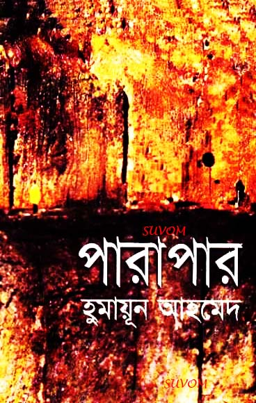

“দু'জন তাহলে তোর উপর নজর রাখছে?”
“হু। নীতুর কাণ্ড। আমাকে সারাক্ষণ চোখে-চোখে রাখা হল ওর অভ্যাস। কোনোদিন দেখব টুটিফুটিকে নিয়ে উপস্থিত হয়েছে”।
“উপস্থিত হলে কি করবি?”
ইয়াদ গম্ভীর গলায় বলল, “সত্যি সত্যি উপস্থিত যদি হয়, তাহলে বলব, আমার সঙ্গে থেকে যাও নীতু”।
“কি মনে হয় তোর, নীতু থাকবে?”
“কিছু বলা যায় না, থাকতেও পারে। এখানে থাকাটা কিন্তু আরামদায়ক। এক রাত থেকে যা, তুই নিজেই টের পাবি। থাকবি?”
“উহু, আমার দম বন্ধ হয়ে আসছে।”
“কুপির ধোঁয়ায় দম বন্ধ হচ্ছে। কুপি নিভিয়ে দিলেই দেখবি—আরাম।”
ইয়াদ ফু দিয়ে কুপি নিভিয়ে দির চারদিকে ঘন অন্ধকার । এমন অন্ধকার আমি আমার জীবনে দেখিনি।’
“হিমু।”
“হু।”
“ভিখিরিদের সঙ্গে আমার একদিন-দুদিন থাকলে হবে না। অনেকদিন থাকতে হবে। এখনো ঠিকমতো ডাটা কালেক্ট শুরু করিনি, তবু অদ্ভুত অদ্ভুত তথ্য পাচ্ছি। একটা তোকে বলি—আমাদের ধারণা, মাসের এক-দুই তারিখের দিকে ভিখিরিরা বেশি ভিক্ষা পায়। লোকজনের হাতে বেতনের টাকা থাকে। তারা ভিক্ষা বেশি দেয়। ব্যাপার মোটেই তা না। সবচে’বেশি ভিক্ষা পায় মাসের শেষ সপ্তাহে। ইন্টারেস্টিং না?”
“হু। ইন্টারেস্টিং।”
“রিসার্চের অনেক কিছু আছে। যারা ভিক্ষা দিচ্ছে তাদের নিয়েও রিসার্চ হওয়া দরকার। এই দিকে কোনো কাজই হয়নি। ভিক্ষুকদের মধ্যে শ্রেণীভেদ আছে, এটা জানিস?”
“জানি না, তবে আন্দাজ করতে পারি”।
“নাস্তিকতা যে ভিখিরিদের মধ্যে সবচে’ বেশি এটা জানিস?”
“আঁচ করতে পারি।”
“ফ্যামিলি স্ট্রাকচার ওদের ভেঙে পড়েছে। স্বামী-স্ত্রীর একসঙ্গে থাকে, আবার স্ত্রী অন্য কারো সঙ্গেও কিছুদিন থেকে স্বামীর কাছে ফিরে আসে। স্বামীর বেলাতেও এটা সত্যি—এরা সম্পূর্ণ নতুন ধরনের এক সমাজ তৈরি করছে। সেই সমাজের আইনকানুন আলাদা। এরা যাযাবরদের মতো হয়ে যাচ্ছে। কোথাও একনাগাড়ে তিন রাতের বেশি থাকবে না। ঘুরে-ঘুরে বেড়াবে। তোর কাছে ইন্টারেস্টিং লাগছে?”
“লাগছে।”
“ভিখিরিদের রোজগার সম্পর্কে আগে যে সমীক্ষা করেছিলাম সেটা পুরোপুরি ভুল। ভিখিরিদের মধ্যে নতুন মা যারা, অর্থাৎ যাদের বাচ্চার বয়স এক মাস-দু’মাস, তারা খুব ভাল রোজগার করতে পারে। তবে এইসব ক্ষেত্রে নতুন মা’র শীরর দুর্বল বলে বের হতে পারে না—বাচ্চাটা ভাড়া খাটে। চল্লিশ থেকে পঞ্চাশ টাকা দৈনিক ভাড়া। এত সব তথ্য পাচ্ছি যে তুই কল্পনাও করতে পারবি না। এইসব তথ্য নিতে—নিতেই এক জীবন কেটে যাবে।”
“এর মানে কি এই যে—তুই তোর জীবন এই গর্তে কাটিয়ে দিবি? নীতুর কাছে ফিরে যাবি না?”
ইয়াদ হাই তুলতে তুলতে বলল, “দেখি”।
“আমি আজ যাচ্ছি।”
“কাল আসবি?”
“বুঝতে পারছি না-আসাতেও পারি। তোর কিছু লাগবে? লাগলে বল, নিয়ে আসব।”
“কিছু লাগবে না।”
“টাকাপয়সা লাগবে?”
“না। পকেটে রুমাল থাকলে রেখে যা। সর্দি হয়ে গেছে। রুমালের অভাবে সামান্য অসুবিধা হচ্ছে।”
ইয়াদের কাছ থেকে বের হয়ে বড় রাস্তায় নেমে দেখি গাড়ি নিয়ে ম্যানেজার অপেক্ষা করছে। আমি বললাম, “আপনি এখনো যাননি? চলে যান”।
“আপনাকে পৌঁছে দিয়ে যাই স্যার।”
“আমি হেঁটে বাড়ি ফিরব । পৌঁছে দিতে হবে না।”
“আপাকে কী বলব?”
“আমি কয়েকদিনের মধ্যে তাঁর সঙ্গে দেখা করব। যা বলার আমি তখন বলব।”
“উনি খুব অস্থির হয়ে আছেন স্যার”।
“বুঝতে পারছি।”
“আগামী কাল সকালের দিকে আসতে পারেন?”
“না।”
“কবে নাগাদ আসবেন? ঠিক দিনটা বললে আমার জন্যে ভাল হয়। আপা জিজ্ঞেস করবেন, কিছু বলতে না পারলে রাগ করবেন।”
“ম্যানেজার হয়ে জন্মেছেন—বসের রাগ তো সহ্য করতেই হবে। ভিখিরি হয়ে জন্মালে কারোর ধার ধারতে হত না। বেঁচে থাকচেন যাদের দয়ায় উপর তাদের সমীহ করতে হচ্ছে না, ইন্টারেস্টিং না?”
ম্যানেজার জবাব দিল না। দুঃখিত চোখে তাকিয়ে রইল। বেচারার জন্যে আমার মায়া লাগছে— কিন্তু কিছু করার নেই। নীতু সঙ্গে দেখা করতে যাবার সময় হয়নি। নীতুকে অপেক্ষা করতে হবে।
১১
রূপার চিঠি এসেছে। কী অবহেলায় খামটা মেঝেতে পড়ে আছে। আরেকটু হলে চিঠির উপর পা দিয়ে দাঁড়াতাম। খাম খুলে দীর্ঘনিঃশ্বাস ফেললাম—এতবড় কাগজে একটি মাত্র লাইন, তুমি কেমন আছ? নাম সই করেনি, তারিখ দেয়নি। চিঠি কোথেকে লেখা তাও জানার উপায় নেই। শুধু একটি বাক্য—তুমি কেমন আছ? প্রশ্নবোধক চিহ্নটি শাদা কাগজে কী কোমল ভঙ্গিতে আঁকা হয়েছে। আমি দীর্ঘনিঃশ্বাস ফেললাম এবং সঙ্গে সঙ্গে মনে হল রূপার আগের চিঠি পুরোটা পড়া হয়নি। কী লেখা ছিল সেই চিঠিতে? কোনোদিনও জানা যাবে না, কারণ চিঠি হারিয়ে ফেলেছি। নীতুকে জিজ্ঞেস করলে হয়তো জানা যাবে। চিঠিটা নীতু পড়েছে। নীতুর কাছে যেতে হবে। যেতে ভরসা পাচ্ছি না, কারণ ইয়াদের খোঁজ পাচ্ছি না। সে আগের জায়গায় নেই। তুলসী মেয়েটি ছিল। সে কিছু জানে না কিংবা জানলেও কিছু বলছে না। নীতুর ম্যানাজারও জানে না। নীতু যাদের ইয়াদের পেছনে লাগিয়ে রেখেছিল তাদের ফাঁকি দিয়ে ইয়াদ সটকে পড়েছে। যে-মানুষ ভোল পাল্টে ঢাকার ভিক্ষুকদের সঙ্গে মিশে গেছে তাকে খুঁজে বের করা খুব সহজ কথা না। নীতু এবং তার আত্মীয়স্বজনরা সর্বশক্তি নিয়োগ করেছে। বিত্তবানদের শক্তি তুচ্ছ করার বিষয় নয়। এরা একদিন ইয়াদকে খুঁজে বের করবে। নীতু যখন তার সামনে এসে দাঁড়াবে তখন ইয়াদকে মাথা নিচু করে তার সঙ্গেই যেতে হবে, কারণ নীতুর আছে ভালবাসার প্রচণ্ড শক্তি।এই শক্তি আগ্রাহ্য করার ক্ষমতা ঈশ্বর মানুষকে দেননি। এই ক্ষমতা তিনি শুধু তাঁর কাছেই রেখে দিয়েছেন।
ইয়াদ কোনো সমস্যা নয়। সমস্যা হল মোরশেদ। সেও উধাও হয়ে গেছে। মজনু মিয়ার ভাতের হোটেলে সে খেতে আসে না। পুরানো বাসায় যায় না। তাঁর আত্মীয়স্বজনদের ঠিকানা জানি না। তবে সে তার আত্মীয়স্বজনদের কাছে যাবে, তাও মনে হয় না।
সে একমাত্র এষার কাছেই যেতে পারে। কেন জানি মনে হচ্ছে তার কাছেও যায়নি। বড় শহরে হঠাৎ হঠাৎ কিছু লোকজন হারিয়ে যায়—কেউ তাদের কোনো খোঁজ দিতে পারে না। মোরশেদও কি হারিয়ে গেছে? অদৃশ্য হয়ে গেছে? প্রকৃতি মানুষকে অনেক ক্ষমতা দিয়েছে। অদৃশ্য হবার ক্ষমতা দেয়নি। তবে মানুষের সেই অক্ষমতা প্রকৃতি পুষিয়ে দেবার ব্যবস্থাও করেছে—কেউ অদৃশ্য হতে চাইলে প্রকৃতি সেই সুযোগ করে দেয়।
একদিন গেলাম এষাদের বাড়ি। এষা দরজা খুলে আনন্দিত গলায়, আরে আপনি।
“কেমন আছেন?”
“ভালো আছি। ঐ যে আপনি গেলেন আর খোঁজ নেই। দাদিমা রোজ একবার জিজ্ঞেস করে লোকটা এসেছে।”
“উনি কি আছেন?”
“না, নেই। আমার কি ধারণা জানেন? আমার ধারণা আপনি খোঁজখবর নিয়ে আসেন। যখন দাদীমা থাকে না, তখনি উপস্থিত হন। আসুন, ভেতরে আসুন”।
আজ এষাকে অনেক হাসিখুশি লাগছে। মনে হচ্ছে তার বয়সও কমে গেছে। উজ্জ্বল রঙের শাড়ি পরেছে। তবে আজো খালি পা।
“ঐদিন আপনি দাদীমাকে হাসপাতালে নিয়ে গেলেন। উনার অষুধপত্র লেগেছিল। আপনি কিনে দিলেন। দাদীমা ঐ টাকা আপনাকে দিতে চাচ্ছেন। সে জন্যেই তিনি আপনাকে এত খোঁজ করছেন। আমি দাদীমাকে বললাম, তুমি শুধু-শুধু ব্যস্ত হচ্ছ—টাকা দিলেও উনি নেবেন না।”
“টাকা নেব না এই ধারণা আপনার কেন হল?”
“আপনাকে দেখে, আপনার কথাবার্তা শুনে মনে হয়েছে। আমি মানুষকে দেখে অনেক কিছু বুঝতে পারি।”
“না, বুঝতে পারেন না। টাকা আমি নেব। সব মিলিয়ে একচল্লিশ টাকা খরচ হয়েছে। আজ টাকাটা নিতেই এসেছি।”
“আপনি সত্যি বলছেন?”
“হ্যাঁ।”
“বসুন, টাকা নিয়ে আসছি”।
এষা টাকা নিয়ে এল। আমি উঠে দাঁড়ালাম। এষা বলল, আপনি বসুন। আমি আবার বসলাম। এষা বসল আমার সামনে। সহজ গলায় বলল, আপনার সঙ্গে আমার আর দেখা হবে না। আমি সামনের সপ্তাহে দেশের বাইরে চলে যাচ্ছি। আমেরিকার নিউজার্সিতে আমার মেজো ভাই থাকেন। ইমিগ্রেন্ট। তিনি আমার জন্যে গ্রীন কার্ডের ব্যবস্থা করেছেন। আমি তাঁর কাছে চলে যাব।
“বাহ,ভাল তো!”
“ভাল-মন্দ জানি না। ভাল-মন্দ নিয়ে মাথা ঘামাইনি।”
“ভাল হবারই সম্ভাবনা। নতুন দেশে, সম্পূর্ণ নতুন করে জীবন শুরু করতে পারবেন। এখানে থাকলে হঠাৎ-হঠাৎ পুরানো স্মৃতি আপনাকে কষ্ট দেবে। হয়তো হঠাৎ একদিন মোরশেদের সঙ্গে পথে দেখা হল। আপনি কি বলবেন ভেবে পাচ্ছেন না, তিনিও ভেবে পাচ্ছেন না। কিংবা ধরুন খিলগাঁয় আপনাদের বাসার সামনে দিয়ে যাচ্ছেন। হঠাৎ মনে হল, আরে, এই বাড়ির বারান্দায় চেয়ার পেতে জোছনা রাতে দু’জন বসে কত গল্প করেছি...'
এষা আমাকে থামিয়ে দিয়ে তীক্ষ্ণ গলায় বলল, এসব আমাকে কেন বলছেন?
“এমনি বলছি।”
“শুনুন হিমু সাহেব! আপনি খুব সুক্ষভাবে আমার মধ্যে একধরনের অপরাধবোধ সৃষ্টির চেষ্টা করছেন।”
“চেষ্টা করতে হবে কেন ? আপনার ভেতর এমিতেই অপরাধবোধ আছে। দেশ ছেড়ে চলে যাবার পেছনেও এই অপরাধবোধ কাজ করছে।”
“সেটা নিশ্চয়ই দূষণীয় নয়।”
“দূষণীয়। মানুষকে পুরোপুরি ধ্বংস করার ক্ষমতা রাখে এমন কটি জিনিসের একটি হল অপরাধবোধ। আপনি এই অপরাধবোধ ঝেড়ে ফেলুন”।
“কীভাবে ঝেড়ে ফেলব?”
“দেশ ছেড়ে যাবার আগে মোরশেদ সাহেবের সঙ্গে একটা সহজ সম্পর্ক তৈরি করুন। কথা বলুন, গল্প করুন। তার একটি চাকরির ব্যবস্থা করে দেয়া যায় কিনা দেখুন। চাকরি খোঁজার ব্যাপারে আমি আপনাকে সাহায্য ও করতে পারি। কিছু ক্ষমতাবান মানুষের সঙ্গে আমার পরিচয় আছে।”
“হিমু সাহেব। আপনি নিতান্তই আজেবাজে কথা বলছেন। আমি এর কোনোটিই করব না। এগারো তারিখ বেলা তিনটায় আমার ফ্লাইট। আমি অসম্ভব ব্যস্ত। তা ছাড়া ইচ্ছাও নেই।”
“টিকিট কাটা হয়েছে?”
“হ্যাঁ, মেজো ভাই টিকিট পাঠিয়েছেন। বাংলাদেশ বিমানের ফ্লাইট।”
আমি উঠে দাঁড়াতে দাঁড়াতে বললাম, এষা, আপনি কিন্তু যেতে পারবেন না। আপনাকে থাকতেই হবে এই দেশেই।
“তার মানে!”
“মানে আমি জানি না। আমি মাঝে-মাঝে চোখের সামনে ভবিষ্যৎ দেখতে পাই। আমি স্পষ্ট দেখছি আপনি মোরশেদ সাহেবের হাত ধরে একটা আমগাছের নিচে দাঁড়িয়ে আছেন।”
“আপনি কি আমাকে ভয় দেখানোর চেষ্টা করছেন?”
“ভয় দেখাচ্ছি না। কি ঘটবে তা আগেভাগে বলে দিচ্ছি।”
“প্লীজ, আপনি এখন যান। আপনার সঙ্গে আমার কথা বলাই ভুল হয়েছে। শুনুন হিমু সাহেব, এগারো তারিখে বেলা তিনটায় আমার ফ্লাইট—আপনার কোনো ক্ষমতা নেই আমাকে আটকানোর। প্লীজ এখন যান। আর কখনো এখানো এসে আমাকে বিরক্ত করবেন না।”
আমাকে দুটা টেলিফোন করতে হবে। রিকশা নিয়ে তরঙ্গিণী স্টোরে উপস্থিত হলাম। নতুন ছেলেটা কঠিন চোখে তাকাচ্ছে। আমি বললাম, বল পয়েন্ট কিনতে এসেছি। এই নিন দশ টাকা। ছেলেটার কঠিন চোখে ভয়ের ছায়া পড়ল। সে আমাকে বুঝতে পারছে না। বুঝতে পারছে না বলেই ভয় পাচ্ছে।
“কয়েকদিন আগে এক ম্যানেজার সাহেবকে কলম কিনতে পাঠিয়েছিলাম। এসেছিল?”
ছেলেটা হাঁ-সূচক মাথা নাড়ল। তার চোখে ভয় আরো গাঢ় হচ্ছে।
“সেই কলমেও লেখা হচ্ছে না বলেই আরেকটা কেনার জন্যে আসা।”
“ভাইজান, আপনার পরিচয় কি?”
“আমার কোনো পরিচয় নেই। আমি কেউ না। আমি হলাম নোবডি। টেলিফোন ঠিক আছে?”
“জ্বি আছে।”
“দুটা টেলিফোন করব।”
প্রথম টেলিফোন বাদলকে। বাদল চমকে উঠে চিৎকার করল—কে, হিমুদা না?
“হু।”
“কোথেকে টেলিফোন করছ?”
“কোথেকে আবার? জেলখানা থেকে।”
“জেলখানা থেকে টেলিফোন করতে দেয়?”
“দেয় না, তবে আমাকে দিয়েছে। জেলার সাহেব ব্যবস্থা করে দিয়েছেন।”
“তা তো দেবেনেই।তুমি চাইলে কে “না” বলবে। তোমার কতদিনের জেল হয়েছে?”
“ছ'মাস।”
“সে কী। বাবা যে বলল, এক বছর”।
“এক বছরেরই হয়েছিল। ভাল ব্যবহারের জন্যে মাফ পেয়েছি।”
“তা হলে তোমার সঙ্গে আর মাত্র তিন মাস পর দেখা হবে।”
“হ্যাঁ।”
“আমার দারুণ লাগছে। গায়ে কাঁটা দিচ্ছে।”
“তুই আমার একটা কাজ করে দে বাদল। একজন লোককে খুঁজে বের করে দে। তাঁর নাম মোরশেদ।”
“কোথায় খুঁজব?”
“কোথায় যে সে আছে বলা মুশকিল। তবে আমার মনে হয় ১৩২ নম্বর খিলগাঁয় একতলা একটা বাড়ির সামনে সে গভীর রাতে একবার-না-একবার আসে। ঐ বাড়ির সামনে ফাঁকা জায়গায়টা সে একটা আমগাছ দেখতে পায়। আসলে কোনো গাছ নেই, কিন্তু লোকটা দেখে। গাছটা দেখার জন্যেই সে প্রতিরাতে একবার সেখানে যাবে। আমার তাই ধারণা।”
“বল কী!”
“ইন্টারেস্টিং ব্যাপার। জেল থেকে বের হয়ে তোকে সব গুছিয়ে বলব। এখন তোর কাজ হচ্ছে ঐ লোকটাকে বের করা । এবং তাঁকে বলা সে যেন অবশ্যি ১১ তারিখ বেলা তিনটার আগেই এয়ারপোর্টে বসে থাকে।”
“কেন হিমুদা?”
“একজন মহিলা ঐ সময় দেশ ছেড়ে যাবেন। লোকটার সঙ্গে মহিলার দেখা হওয়া উচিত। বলতে পারিব না?”
“অবশ্যই পারব। শুধু যে পারব তা না – আমি নিজেও এয়ারপোর্ট যাব”।
“তোকে যেতে হবে না। তুই শুধু খবরটা দে।” ‘আমি টেলিফোন নামিয়ে রাখলাম। মোরশেদ সাহেবকে আমি নিজেও খুঁজে বের করতে পারতাম, কিন্তু আমার অন্য কাজ আছে। আমাকে যেতে হবে ইয়াদের সন্ধানে। নীতুর সঙ্গেও দেখা করতে হবে।
১২
ইয়াদের বাড়ি সব সময় আলোয় ঝলমল করে। সন্ধ্যার পর থেকেই এরা বোধহয় সব ক’টা বাতি জ্বালিয়ে রাখে। আজ ওদের বাড়ি অন্ধকার। গেট থেকে গাড়ি-বারান্দা পর্যন্ত রাস্তার দু’পাশের বাতিগুলো পর্যন্ত নেভানো। শুধু বারান্দায় বাতি জ্বলছে। আমি গেটের দারোয়ানকে জিজ্ঞেস করলাম, কেউ নেই নাকি?
“আপা আছেন।”
“কুকুর দু'টা কোথায়—টুটি-ফুটি?”
“ওরা বান্ধা আছে। ভয় নাই, যান।”
ভয় নেই বললেই ভয় বেশি লাগে। আমি ভয়ে-ভয়ে এগুচ্ছি। বারান্দায় বেতের চেয়ারে নীতুকে বসে থাকতে দেখলাম। আজ তার গায়ে শাদা রঙের শাড়ি। শাদা শাড়িতে নীল ফুলের সুতার কাজ। গায়ের চাদরটাও শাদা। শাদা রঙ মেয়েদের এত মানায় আজ প্রথম জানলাম। নীতু আমাকে দেখে উঠে এল। সহজ গলায় বলল, আসুন।
“ভাল আছেন?”
“হ্যাঁ, ভাল। এখানে বসবেন, না ভেতরে যাবেন?”
“বারান্দাই ভাল।”
“হ্যাঁ, বারান্দাই ভাল। আপনি কি লক্ষ করেছেন বেশির ভাগ সময় আমি বারান্দায় বসে থাকি?”
“আমি লক্ষ করেছি।”
“আপনার তাড়া নেই তো? আপনার সঙ্গে অনেক কথা আছে। আমি চা দিতে বলি। টুটি-ফুটিকে খাবার দিয়ে আসি। আমি খাবার না দিলে ওরা কিছু খায় না।”
নীতু উঠে গেল। আমি স্বস্তির নিঃশ্বাস ফেললাম। ভেবেছিলাম নীতুকে খুব আপসেট দেখব। সে রকম মনে হচ্ছে না। আপসেট যদি হয়েও থাকে নিজেকে সামলে নিয়েছে। আমি লক্ষ করেছি ছোটখাট ব্যাপারে যারা অস্থির হয়, বড় ব্যাপারগুলিতে তারা মোটামুটি ঠিক থাকে।
ঘরে তৈরি সমুচা এবং পটভর্তি চা। ট্রে নীতু নিয়ে এসেছে। এই কাজ সে কখনো করে না। খাবার আনার অন্য লোক আছে।
“সমুচাগুলি এইমাত্র ভাজা হয়েছে, খান। ভাল লাগবে। সঙ্গে টক দেব?”
“না। টুটি-ফুটিবে খাবার দেয়া দেয়া হয়েছে?”
“দেয়া হয়েছে।”
“ওরাও কি সমুচা খাচ্ছে?”
“না, ওরা সেদ্ধ মাংস খাচ্ছে। হলুদ দিয়ে সেদ্ধ করা মাংস। দিনে ওরা একবারই খায়।”
আমি সমুচা খেতে-খেতে বললাম, “বিলেতি কুকুর একবার খায়, কিন্তু দেশীগুলি সারাক্ষণ খায়—কিছু পেলেই খেয়ে ফেলে”।
“ট্রেনিং দেয়া হয় না বলে সারাদিন খায়। ট্রেনিং দিলে ওরা একবেলা খেত। চা ঢেলে দেব?”
“দিন।”
নীতু চা ঢেলে কাপ এগিয়ে দিল। আমি লক্ষ করলাম,শাদা শাড়ির সঙ্গে মিলিয়ে নীতু কানে মুক্তার দুল পরেছে।
“মিষ্টি হয়েছে?”
“হয়েছে।”
নীতু চেয়ারে সোজা হয়ে বসল। বড় নিঃশ্বাস নিল। মনে হচ্ছে সে এখন কঠিন কিছু কিথা বলবে।
“আপনি গিয়েছিলেন ইয়াদের কাছে?”
“জ্বি”।
“তাকে বলেছিলেন পাগলামি বন্ধ করে ঘরে ফিরে আসতে?”
“না।”
“আমিও তাই ভেবেছিলাম। আপনি তাকে দেখে খুব মজা পেয়েছেন। একজনকে শুধু কথায় ভুলিয়ে ভিখিরিদের সঙ্গে ভিড়িয়ে দেয়া তো সহজ কাজ না। কঠিন কাজ। সবাই পারে না। আপনি পারেন।” নীতু হাই তুলতে-তুলতে বলল।
“আমি ওকে কিছু বলিনি, কারণ বলার প্রয়োজন দেখিনি”।
“কেন প্রয়োজন দেখেননি?”
“ও ফিরে আসবে। ওর প্রতি আপনার ভালবাসা প্রবল, সেই ভালবাসা অগ্রাহ্য করার ক্ষমতা ওর নেই।”
“বড়-বড় কথা বলে আমাকে ভোলাতে চাচ্ছেন?”
“না। যা সত্যি তাই বললাম।”
“যা সত্যি তা আপনি কাউকে বলনে না, কারণ সত্যটা কি তা আপনি নিজেও জানেন না। আপনি বিভ্রম তৈরি করতে পারেন বলেই বিভ্রমের কথা বলেন। আমি খুব বিনীতভাবে আপনাকে একটা চিঠি লিখেছিলাম। আশা করেছিলাম আপন আসবেন। আসেননি। ইয়াদের সঙ্গে দেখা করতে গিয়েছেন—তাও আমার কারণে যাননি। ইয়াদকে আপনি কানে মন্ত্র দিয়েছেন—তাকে বলেছেন যে দু'জন লোক তার পেছনে লাগানো আছে। যে জন্যে সে ভোররাতে সবার চোখে ধুলা দিয়ে পালিয়ে যায়। আমি কি ঠিক বলছি না? চুপ করে থাকবেন না। উত্তর দিন”।
আমি বললাম , “একটা সিগারেট কি খেতে পারি?”
নীতু নরম গলায় বলল, “অবশ্যই খেতে পারেন। আপনার বন্ধু গাঁজা খেয়ে মাঠে পড়ে ছিল, আপনি সিগারেট খাবেন না কেন? তবে ভাববেন না আপনাকে আমি সহজে ছেড়ে দেব। আপনাকে আমি শাস্তি দেব”।
“কি শাস্তি?”
“আপনি তো ভবিষ্যৎ বলে বেড়ান। কাজেই আপনি নিজেই অনুমান করুন। দেখি আপনার অনুমান ঠিক হয় কি না।”
“অনুমান করতে পারছি না।”
“চা খাবেন আরেক কাপ? পটে চা আছে।”
“না, আর খাব না। আমি এখন উঠব।আর আপনি দুঃশ্চিন্তা করবেন না। ইয়াদ চলে আসবে।”
“সাত্ত্বনার জন্যে ধন্যবাদ।”
নীতু হাসল। কিন্তু তার চোখ অসুস্থ মানুষের চোখের মতো ঝকঝক করছে। আমি চেয়ার ছেড়ে উঠে দাঁড়ালাম। নীতু বলল, “আপনাকে কি শাস্তি দেব তা না শুনেই চলে যাচ্ছেন যে। অনুমান করতে পারছেন না?”
“না।”
“একটু চেষ্টা করুন। চেষ্টা করলেই পারবেন”।
“পারছি না।”
“আচ্ছা যান।”
নীতু উঠে দাঁড়াল। আমি গেটের দিকে এগুচ্ছি—এবং ভয় পাচ্ছি।অকারণ তীব্র ভয়। মনে হচ্ছে শীরর ভারী হয়ে এসেছে। ঠিকমতো পা ফেলতে পারছি না। গেটের প্রায় কাছাকাছি চলে যাবার পর বুঝতে পারলাম নীতু কি শাস্তি দিতে যাচ্ছে। একবার ইচ্ছা করল চেচিয়ে বলি–“না নীতু , না।”
তার সময় পাওয়া গেল না—টুটি-ফুটি উল্কার মতো ছুটে এল। মাটিতে পড়ে যাবার আগে এক ঝলক দেখলাম বারান্দায় আঙুল দিয়ে উচিয়ে নীতু দাঁড়িয়ে আছে। ধবধবে শাদা পোশাকে তাকে দেখাচ্ছে দেবী প্রতিমার মতো। নীতু হিসহিস করে বলল, Kill him. Kill him.
১৩
আমি বাস করছি অন্ধকারে এবং আলোয়। চেতন এবং অবচেতন জগতের মাঝামাঝি। Twilight zon. আমার চারপাশের জগৎ অস্পষ্ট। আমি কি বেঁচে আছি? আমাকে ঘিরে অনেক লোকের ভিড়। এটা কি কোনো হাসপাতাল? আমার কোনো ক্ষুধাবোধ নেই, কিন্তু প্রবল তৃষ্ণা। “পানি” বলে চিৎকার করতে ইচ্ছা করছে। চিৎকার করতে পারছি না। স্বপ্ন ও সত্য একাকার হয়ে গেছে। বাস্তব এবং কল্পনা পাশাপাশি হাত ধরাধরি করে এগুচ্ছে। আমি এদের আলাদা করতে চেষ্টা করছি, কিন্তু পারছি না।
মোটা গম্ভীর স্বরে একজন কেউ বলছেন,
“হিমু সাহেব! হিমু সাহেব। আপনি কি আমার কথা শুনতে পাচ্ছেন? জবাব দেবার দরকার নেই— জবাব দেবার চেষ্টা করবেন না। শুধু আঙুল নড়ানোর চেষ্টা করুন। আমি আপনার ডাক্তার। আপনি যদি আমার কথা শুনতে পান তাহলে পায়ের আঙুল নড়ানোর চেষ্টা করুন।”
আমি প্রাণপ্রণে পায়ের আঙুল নাড়াতে চেষ্টা করি। পারি কি পারি না বুঝতে পারি না। মোটা গলার ডাক্তার সাহেবের কথাও শুনতে পাই না। আশেপাশে সব শব্দ অস্পষ্ট হয়ে আসে —তখন গভীর কোনো নৈঃশব্দ থেকে আমার বাবার গলা শুনতে পাই—
“খোকা! খোকা! আমার কথা শুনতে পাচ্ছিস? শুনতে পেলে আঙুল-ফাঙুল নাড়াতে হবে না। মনে-মনে বল শুনতে পাচ্ছি। তা হলেই আমি বুঝব। শুনতে পাচ্ছিস খোকা?”
“পাচ্ছি। তুমি আমাকে খোকা ডাকছ কেন? তুমিই তো নাম দিলে হিমালয়।”
“তোর মা খোকা ডাকত—এই জন্যে ডাকছি। শোন খোকা, তোর অবস্থা তো কাহিল—টুটি-ফুটি তোর পেটের নাড়িভুড়ি ছিড়ে ফেলেছে। আমি অবশ্যি খুব খুশি”।
“তুমি খুশি?”
“খুব খুশি। মহাপুরুষ হবার একটা ট্রেনিং বাকি ছিল—তীব্র শারীরিক যন্ত্রণার ট্রেনিং। সেটি হচ্ছে।”
“আমি কি মারা যাচ্ছি?”
“বলা মুশকিল। ফিফটি-ফিফটি চান্স। এটাও ভাল হল—ফিফটি-ফিফটি চান্সে দীর্ঘদিন থাকার দরকার আছে। এ এক অসাধারণ অভিজ্ঞতা।”
“বাবা তুমি কি সত্যি আমার সঙ্গে কথা বলছ, না এসব আমার মনের কল্পনা?”
“এটাও বলা মুশকিল, ফিফটি-ফিফটি চান্স। শতকরা পঞ্চাশ ভাগ সম্ভবনা, পুরোটি তোর অসুস্থ থাকার কল্পনা। আবার পঞ্চাশ ভাগ সম্ভবনা আমি কথা বলছি তো সঙ্গে। বেশিক্ষণ কথা বলতে পারব না, খোকা। ওরা তোকে মরফিয়া দিচ্ছে। তুই এখন ঘুমিয়ে পড়বি।”
“আজ কী বার বাবা? কত তারিখ?”
“জানি না। তোরও জানার দরকার নেই। আমি এবং তুই আমরা দু’জনই এখন বাস করছি সময়হীন জগতে। এই জগতটা অদ্ভুত খোকা। ভারি অদ্ভুত। এই জগতে সময় বলে কিছু নেই। আলো নেই... কিছুই নেই...”
“আমার তারিখ জানার খুব দরকার। এগারো তারিখ এষা চলে যাবে। মোরশেদ সাহেবের এয়ারপোর্টে যাবার কথা। উনি কি গেছেন? এষা কি তাঁর সঙ্গে ফিরে এসেছে?”
“তুই কি চাস সে ফিরে আসুক?”
“চাই।”
“তা হলে ফিরে এসেছে। সময়হীন জগতের মজা হচ্ছে, এই জগতের বাসিন্দারা যা চায়—তাই হয়। সমস্যা হচ্ছে এই জগতের কেউ কিছু চায় না।”
“হিমু সাহেব। হিমু সাহেব। আমি আপনার ডাক্তার। আপনি কি আমার কথা শুনতে পাচ্ছেন? শুনতে পেলে পায়েল আঙুল নাড়ান। গুড, ভেরি গুড। দেখি, এবার হাতের আঙুল নাড়ান। কষ্ট হলেও চেষ্টা করুন। আপনি পারবেন। আপনি অবশ্যই পারবেন। ভেঙে পড়লে চলবে না—আপনাকে মনে জোর রাখতে হবে। সাহস রাখতে হবে।”
একসময় আমার জ্ঞান ফেরে। ডাক্তার চোখের বাঁধন খুলে দেন। আমি অবাক হয়ে চারপাশের অসহ্য সুন্দর পৃথিবীকে দেখি। ফিনাইলের গন্ধভরা হাসপাতালের ঘরটাকে ইন্দ্রপুরীর মতো লাগে। মায়াময় একটি মুখ এগিয়ে আসে আমার দিকে।
“ছোটমামা, আমাকে চিনতে পারছেন? আমি মোরশেদ। চিনতে পারছেন?”
“পারছি। এষা কোথায়?”
“ও বারান্দায় আছে। ভেতরে আসতে লজ্জা পাচ্ছে। ওকে কি ডাকব?”
“না, ডাকার দরকার নেই।”
“আপনি কথা বলবেন না, ছোটমামা। আপনার কথা বলা নিষেধ।”
আমি কথা বলি না। চোখ বন্ধ করে ফেলি—আবারো তলিয়ে যাই গভীর ঘুমে। ঘুমের ভেতরই একটা বিশাল আমগাছ দেখতে পাই। সেই গাছের পাতায় ফোঁটা-ফোঁটা জোছনা বৃষ্টির মতো ঝরে পড়ছে। হাত ধরাধরি করে দু'জন হাঁটছে গাছের নিচে। মানব ও মানবী। কারা এরা? কি ওদের পরিচয়? দু’জনকেই খুব পরিচিত মনে হয়। অনেক দুর থেকে চাপা হাসির শব্দ ভেসে আসে। আমি চমকে উঠে বলি, কে আপনি? কে?
ভারী গম্ভীর গলায় উত্তর আসে। আমি কেউ না, I am nobody!
(সমাপ্ত)
একটি শুভম প্রয়াস
পারাপার
হুমায়ূন আহমেদ

কাল সারারাত ঘুম হয় নি।
ঘুম না হবার কোনো কারণ ছিল না।
কারণ ছাড়াই এই পৃথিবীতে অনেক কিছু
ঘটে। দিনের আলো ফোঁটা পর্যন্ত অপেক্ষা
করে ঘুমোতে গেলাম। সঙ্গে সঙ্গে চোখভর্তি
ঘুম। কতক্ষণ ঘুমিয়েছি জানি না। ঘুম ভাঙল
স্বপ্ন দেখে। আমার বাবাকে স্বপ্নে দেখলাম ।
তিনি আমার গা ঝাঁকাতে ঝাঁকাতে বলছেন,
এই হিমু, হিমু, ওঠ । তাড়াতাড়ি ওঠ ।
ভূমিকম্প হচ্ছে। ধরণী কাঁপছে।
- আমি ঘুমের মধ্যেই বললাম, আহ,
কেন বিরক্ত করছ।
- বাবা ভরাট গলায়বললেন, প্রাকৃতিক
দুর্যোগের মতো মজার ব্যাপার আর হয় না।
ভেরি ইন্টারেস্টিং। এই সময় চোখকান খোলা
রাখতে হয় । তুই বেকুবের মতো শুয়ে আছিস ।
ঘুমোতে দাও বাবা।
তোর ঘুমোলে চলবে না। মহাপুরুষদের
সবকিছু জয় করতে হয়। ক্ষুধা, তৃষ্ণা, ঘুম।
ঘুম হচ্ছে দ্বিতীয় মৃত্যু ৷ সাধারণ মানুষ
ঘুমায়- ... অসাধারনা জেগে থাকে......
এক
ঢাকা শহরে ঘুঘুর ডাক শোনার কথা না।
কেউ কোনোদিন শুনেছে বলেও শুনি নি। ঘুঘু শহর পছন্দ করে না, লোকজন পছন্দ করে না। তাদের পছন্দ গ্রামের শান্ত দুপুর। তারপরেও কী যে হয়েছে— আমি ঘুঘুর ডাক শুনছি। বাংলাবাজার যাচ্ছিলাম, গুলিস্তানে ট্রাফিক ট্রাফিক জ্যামে পড়লাম। রিকশা, টেম্পো, বাস, ঠেলাগাড়ি সবকিছু মিলিয়ে দেখতে দেখতে জট পাকিয়ে গেল। একেবারে কঠিন গিট্টু। হতাশ হয়ে রিকশায় বসে আছি আর ভাবছি— আধুনিক মানুষের একজোড় পাখা থাকলে ভালো হতো। জটিল ট্রাফিক জ্যামের সময় তারা উড়ে যেতে পারত। ঠিক এই রকম হতাশা জর্জরিত সময়ে ঘুঘু পাখির ডাক শুনলাম। সেই অতি পরিচিত শান্ত বিলম্বিত টানা-টানা সুর, যা শুনলে মুহুর্তের মধ্যে বুকের মধ্যে মোচড় দিয়ে ওঠে। মানুষের শরীরের ভেতরে যে আরেকটি শরীর আছে তার মধ্যে কাঁপন ধরে।
আমি হতচকিত ভঙ্গিতে এদিক-ওদিক তার্কালাম। এমন কি হতে পারে যে কেউ খাচায় করে পাখি নিয়ে যাচ্ছে, সেই পাখি ডেকে উঠল ? ইদানীং ঢাকার লোকদের পাখি-পোষা অভ্যাসে ধরেছে নীলক্ষেতে বিরাট পাখির বাজার।
ট্রাফিক জট কমছে না। জট-কমানোর চেষ্টাও কেউ করছে না। রোগা ধরনের এক ট্রাফিক পুলিশ দূরে দাড়িয়ে বাদামওয়ালার সঙ্গে কথাবার্তা বলছে। এখানে যে কঠিন অৱস্থা তা সে জানে বলেও মনে হচ্ছে না। এই তো দেখি সে বাদাম কিনছে একঠোঙা বাদাম, একটু ঝাল লবণ।
যতই সময় যাচ্ছে অবস্থা জটিল হয়ে আসছে। সবাই কিন্তু নির্বিকার— যা হবার হোক এমন এক ভঙ্গি। কারো মধ্যেই কোনো অস্থিরতা নেই। আমার রিকশা ঘেঁসে একটা মাইক্রোবাস দাঁড়িয়ে। মাইক্রোবাসের পর্দা টেনে দেয়া। ভেতরের যাত্রীদের কাউকে দেখা যাচ্ছে না। মাইক্রোবাসের ড্রাইভারকে শুধু দেখছি। মনে হলো সে খুব মজা পাচ্ছে। একবার সে উচু গলায় বলল, লাগছে গিট্টূ।
চড়চড় করে রোদ বাড়ছে। আশ্বিন মাসে খুব ঝাজালো রোদ ওঠে । বাতাস থাকে মধুর। আজ বাতাস নেই, শুধুই রোদ । রোদের সঙ্গে ঘামের গন্ধ, ঘামের গন্ধের সঙ্গে পেট্রোলের গন্ধ, পেট্রোলের গন্ধের সঙ্গে ঘুঘুর ডাক ঘু-ঘু-ঘু। মিলছে না একেবারেই মিলছে না। Something is wrong। আমি রিকশাওয়ালাকে বললাম, পাখি ডাকছে নাকি ?
আমার রিকশাওয়ালা বিরক্তমুখে আমার দিকে তাকাল। অর্থাৎ ঘুঘু ডাকছে না। কিংবা ডাকলেও সে শুনছে না। সবাই সবকিছু শুনতে পায় না। তাছাড়া রাস্তায় যারা জীবনযাপন করে গাড়ির হন শুনতে শুনতে তাদের কান নষ্ট হয়ে যায় ।
মাইক্রোবাসের পর্দা সরে গেল। একজন পান-খাওয়া মহিলা চোখ বড় বড় করে আমাকে দেখছেন। ভদ্রমহিলার সিথির চুল পাকা । এছাড়া তার মুখে বয়সের কোনো চিহ্ন নেই। চুল পাকা না থাকলে অনায়াসে তাকে ৩০/৩২ বছরের তরুণী বলে চালানো যেত। তিনি জানালার পর্দা সরিয়েছেন পানের পিক ফেলার জন্যে । অনেকখানি মাথা বের করে একগাদা পানের পিক ফেলে হাসিমুখে আমার দিকে তাকিয়ে বললেন, তুই হিমু না ?
আমি জবাব দিলাম না, কারণ ভদ্রমহিলাকে আমি চিনতে পারছি না। আমার অতি দূরের কোন আত্মীয় হবেন। মেয়েরা অতি দূরের আত্মীয়কে কাছের মানুষ প্রমাণ করার জন্যে চট করে তুই বলে ।
কী রে, কথা বলছিস না কেন ? তুই কি হিমু ?
হ্যাঁ।
আমাকে চিনতে পারছিস ?
না।
আমি আলেয়া খালা। এখন চিনেছিস ?
আলেয়া নামে কাউকে চিনি বলে মনে পড়ল না। একজন আলেয়াকেই চিনতাম, সে সিরাজউদৌলা নাটকের নর্তকী । সিরাজউদ্দৌলা পলাশীর আম্রকাননে তার বিখ্যাত যুদ্ধ যাত্রার আগে আলেয়ার কাছ থেকে বিদায় নিতে গেলেন, আলেয়া তখন গান ধরল— ‘পথহারা পাখি, কেঁদে ফিরে একা ।
হিমু, তুই এখানে কী করছিস ?
রিকশার সিটের উপর বসে আছি ।
সে তো দেখতেই পাচ্ছি। যাচ্ছিস কোথায় ?
যখন রিকশায় উঠেছিলাম, তখন একটা গন্তব্য ছিল। এখন নিজেও ভুলে গেছি।
আমার সঙ্গে ফাজলামি করছিস কেন ? আমি তোর খালা না ? আয়, উঠে আয় ।
কোথায় উঠে আসব ?
বাসে উঠে আয় । গরমে সিদ্ধ হবি না কি ? তুই যেখানে যাবি, নামিয়ে দেব। রিকশা ভাড়া মিটিয়ে উঠে আয়।
আমি কথা বাড়ালাম না। রিকশাওয়ালাকে ভাড়া মিটিয়ে মাইক্রোবাসে উঠে পড়লাম। রিকশাওয়ালাকে দেখে মনে হলো, সে অত্যন্ত অপমানিত বোধ করছে। অপমানিত বোধ করারই কথা, তার রিকশাকে ছোট করা হয়েছে।
মাইক্রোবাসে ঢুকে মনে হলো— ছোটখাটো একটা চলন্ত বেহেশতে ঢুকে পড়েছি। এয়ারকন্ডিশান্ড গাড়ি, এয়ারকন্ডিশনার চালু আছে। শীত-শীত ভাব । মাইক্রোবাসটার ছাদের একটা অংশ কাচের । ভেতরে বসে আকাশ দেখা যাচ্ছে । ছয়জনের বসার জায়গা। প্রতিটি সিট আলাদা। সিটগুলো ঘূর্ণায়মান। যেদিকে ইচ্ছা সেদিকে ঘুরানো যায়। ভদ্রমহিলা একা যাচ্ছেন না। তার সঙ্গে তার মেয়ে, চেহারা দেখে সে রকমই মনে হচ্ছে, তবে চেহারা পুরো দেখা যাচ্ছে না, গাঢ় সানগ্লাসে মুখের পুরোটাই প্রায় ঢাকা । মেয়েটির কোলের উপর একটা বই। সানগ্রাস পরে এর আগে আমি কাউকে পড়তে দেখি নি। ভদ্রমহিলা তার মেয়ের দিকে তাকিয়ে আগ্রহ নিয়ে বললেন, ও খুকি, এ হচ্ছে হিমু। খুব ভালো হাত দেখতে পারে । হাত দেখাবি ?
খুকি কোনোরকম উৎসাহ দেখানো দূরে থাকুক, বই থেকে চোখ পর্যন্ত তুলল না। এটা বড় ধরনের অভদ্রতা। তবে রূপবতীদের সব অভদ্রতা ক্ষমা করা যায়। এরা অভদ্র হবে এটাই স্বাভাবিক। এরা ভদ্র হলে অস্বস্তি লাগে ।
কী রে খুকি, হাত দেখাবি? বসেই তো আছিস। দেখা না। হিমু চট করে দেখে ফেলবে।
খুকি বরফশীতল গলায় বলল, কেন বিরক্ত করছ ?
আলেয়া খালা নিজের হাত বারিয়ে বললেন, হিমু, আমার হাতটা দেখে দে তো । মন দিয়ে দেখবি ।
খুকি চোখ তুলে এক পলকের জন্যে মার মুখ দেখে আবার বই পড়তে শুরু করল। এই এক পলকের দৃষ্টিতেই তার মার ভস্ম হয়ে যাবার কথা। কালো চশমার কারণে হয়তো ভস্ম হলেন না ।
আমি বললাম, খালা, আমি হাত দেখা ছেড়ে দিয়েছি।
সে কী!
মিথ্যা বানিয়ে বানিয়ে বলতাম। মিথ্যা বলতে বলতে এক সময় নিজের উপর ঘেন্না ধরে গেল। তারপর ঠিক করলাম, আর না, যথেষ্ট হয়েছে।
বাজে কথা রেখে হাতটা দেখ তো ।
আমি সঙ্গে সঙ্গে তার দুই হাতের দিকে তাকিয়ে তীক্ষ্ণ দৃষ্টিতে তাকিয়ে গম্ভীর গলায় বললাম, আপনার সামনে একটা ভয়াবহ দুর্যোগ। পারিবারিক সমস্যা। অসম বিবাহঘটিত সমস্যা ।
ভদ্রমহিলা তার মেয়ের দিকে তাকালেন। ভদ্রমহিলার দৃষ্টি বলে দিচ্ছে, এই তো হয়েছে। মেয়ের দিকে তাকানোর অর্থ হচ্ছে, মেয়েকে ইশারায় বলা— কী, বলেছিলাম না ভালো হাত দেখে। দেখলি তো ? হাতেনাতে প্রমাণ ।
আমি বললাম, দুর্যোগ হঠাৎ উপস্থিত হয়েছে।
ভদ্রমহিলা বললেন, হঠাৎ মানে কবে ?
ধরুন এক মাস। তবে দুর্যোগ আপনারা সামলাতে পারছেন না। আরো জটিল করে ফেলছেন।
ভদ্রমহিলা আবারো মেয়ের দিকে তাকালেন । চোখের ইশারায় আবারো বললেন, দেখলি কত বড় পামিস্ট ?
মেয়েটি হাতের বই মুড়ে রাখল। চোখ থেকে চশমা খুলে ফেলে পূর্ণ দৃষ্টিতে আমার দিকে তাকাল। আমি নিঃসন্দেহে হলাম, এই মেয়ে, মানুষ না। এ হলো হুর । এদের শুধু বেহেশতেই পাওয়া যায়। এরা বেহেশতের সঙ্গিনী ।
And there will be companions
With beautiful, big
And lustrous eyes.
এই মেয়েটির চোখ – big, beautiful and lustrous. ami vablam, মেয়েটা কিছু বলবে বোধহয়— ভঙ্গিটা সে রকম। সে শেষ মুহুর্তে নিজেকে সামলে নিল। আবার কালো চশমা পরল, বই পড়তে শুরু করল। এটা কি বিশেষ কোনো বই যা সানগ্রাস ছাড়া পড়া যায় না ?
আলেয়া খালা বললেন, এই সমস্যাটা কখন মিটবে ?
মিটবে না।
তিনি হাহাকার করে উঠলেন, কী বলছিস তুই! মিটবে না মানে ?
আমি নির্বিকার ভঙ্গিতে বললাম, এই সমস্যা মেটার নয়। সমস্যা বাড়তে বাড়তে এক্সপ্লোশান লিমিটে চলে আসবে। এই সমস্যায় একটি বাচ্চা মেয়ে জড়িত। মেয়েটির মৃত্যুযোগ আছে। সে মারা গেলে হয়তোবা সমস্যা মিটে যাবে।
আলেয়া খালা হতভম্ব হয়ে তাকিয়ে রইলেন।
সানগ্রাস পরা বেহেশতের পরী এতক্ষণে আমার দিকে তাকিয়ে বললেন, এইসব তথ্য আপনি আমার মার হাতে লেখা দেখতে পেলেন ?
জি না। আমি বলেছি ইনটুশন থেকে। আমার ইনটুশন প্রবল। যে মেয়েটির কথা বললাম সে বোধহয় আপনার মেয়ে ?
খুকি জবাব দিল না।
মাইক্রোবাস নড়ে উঠল। জ্যাম কমেছে। গাড়ি চলতে শুরু করেছে। গাড়ির সামনে একটা ঠেলাগাড়ি আছে বলে গাড়িটাকে শম্বুক গতিতে এগুতে হচ্ছে। আমি উঠে দাড়িয়ে বললাম, যাই।
ভদ্রমহিলা তখনো নিজেকে সামলাতে পারেন নি। আমি যে চলে যাবার জন্যে উঠে দাঁড়িয়েছি তাও বোধহয় বুঝতে পারেন নি। মাইক্রোবাসের স্নাইডিং দরজা খোলার পর তিনি সংবিত ফিরে পেলেন। তীক্ষ্ণ গলায় বললেন, না না, তুমি যেতে পারবে না।
এতক্ষণ আমাকে তুই বলছিলেন, শেষ সময়ে তুমি। ততক্ষণে আমি নেমে গেছি। মাইক্রোবাসের জানালার কাচ সরিয়ে ভদ্রমহিলা ব্যাকুল হয়ে ডাকছেন, এই হিমু এই, এই! এই ছেলে! আমি তার দিকে তাকিয়ে অভয়দানের হাসি হাসলাম— অর্থাৎ আসব। আবার দেখা হবে।
ভদ্রমহিলাকে আমি চিনতে পারছি না। এই সমস্যাটা আমার ইদানীংকালে হচ্ছে। মানুষ না-চেনা রোগ। মস্তিষ্কের যে অংশে স্মৃতি জমা থাকে সেই অংশে কিছু বোধহয় হয়েছে। স্মৃতির ফাইল গায়েব হয়ে গেছে। এক সময়কার চেনা লোকজনদের সঙ্গে দেখা হয়। যেহেতু ব্রেইন সেলে জমা রাখা তাদের ফাইল গায়েব হয়ে গেছে, সেহেতু তাদের চিনতে পারি না। একজন নিওরোলজিস্টের সঙ্গে দেখা করা দরকার। রোগ আরো বাড়বার আগেই চিকিৎসা দরকার, নয়তো দেখা যাবে কাউকেই চিনতে পারছি না। সবাই অপরিচিত। অবশ্যি আমার ধারণা, সেই অভিজ্ঞতাও মজার অভিজ্ঞতা হবে। ৬০০ কোটি মানুষের বিশাল পৃথিবী, আমি কাউকেই চিনতে পারছি না।
মাইক্রোবাস থেকে বেকায়দা জায়গায় নেমেছি। সামনে পেছনে কোনো দিকেই যেতে পারছি না। দুদিকেই গাড়ির স্রোত। পথচারীকে রাস্তা পার হবার সুযোগ করে দেবার জন্যে এদের কোনো মাথাব্যথা নেই। নিজে পৌছতে পারলেই হলো। আমাকে অপেক্ষা করতে হবে আরেকটা ট্রাফিক জ্যামের জন্যে। দেখা যাচ্ছে, ট্রাফিক জ্যামেরও একটা ভালো দিক আছে। এই সময়ে রাস্তা পারাপার করতে পাড়া যায়। To every cloud there is a silver lining.
আমি অপেক্ষা করছি। অপেক্ষা করতে খুব যে খারাপ লাগছে তা না। কারণ তেমন কোনো পরিকল্পনা নিয়ে বের হইনি। যাচ্ছি গেণ্ডারিয়ার দিকে । মোহাম্মদ ইয়াকুব আলি নামের এক ভদ্রলোক জরুরি তলব পাঠিয়েছেন। ভদ্রলোককে আমি চিনি না। তিনিও সম্ভবত আমাকে চেনেন না। তবে শুনেছি হুলস্থূল ধরনের বড় লোক। হেন ব্যবসা নেই যা তার নেই। ইন্ডাস্ট্রি ফিন্ডাস্ট্রি দিয়ে যাকে বলে— ছেড়াবেড়া' । এমন একজন আমাকে জরুরি তলব পাঠাবেন কেন তাও বুঝতে পারছি না। জরুরি তলব পাঠালে ধীরে-সুস্থে যাবার নিয়ম । আমিও তাই করেছি। দু ঘণ্টা দেরি করেছি।
আবার ট্রাফিক জ্যাম লেগে গেছে। দুটা রিকশার পেছনের চাকা একটার সঙ্গে আরেকটা লেগে গেছে। দুজন রিকশাওয়ালাই দোষ কার তা নিয়ে তর্ক করছে, চাকা ছাড়াবার চেষ্টা করছে। জনতাও দুই ভাগ হয়ে গেছে। একদল খালি গা রিকশাওয়ালার পক্ষে অন্যদল দাড়িওয়ালা রিকশাওয়ালার পক্ষে । কাজেই জ্যাম । গাড়ি-টাড়ি বন্ধ করে ড্রাইভাররা সব গালে হাত দিয়ে বসে আছে ।
আশ্বিন মাসের ঝাজালো রোদ ক্রমেই বাড়ছে। ঘুঘু পাখির ডাক আর শুনছি না।
আজকের দিনটা রহস্য দিয়ে শুরু হলো। পাখি রহস্য।
দুই
এ দেশের বিত্তবান সম্প্রদায় বাস করেন গুলশান, বনানী এবং বারিধারায় । এই প্রচলিত ধারণা ঠিক নয় । পুরনো ঢাকার গলি তস্য-গলি করতে করতে যেখানে এসে দাঁড়ালাম সেখানে দু-তিন বিঘার মতো জায়গা নিয়ে এক দুর্গ দাঁড়িয়ে আছে । চারদিকে জেলখানার মতো উচু এবং ভারি দেয়াল । দেয়ালের মাথায় কাঁটাতার। নিরেট লোহার গেট । সেই গেটে অনেকক্ষণ ধাক্কাধাক্কি করেও লাভ হলো না। শব্দ ভেতরে যাচ্ছে না বলেই আমার ধারণা। কিংবা এ-ও হতে পারে যে, এ বাড়ির নিয়ম হচ্ছে ভেতর থেকে লোকজন বেরুতে পারে, বাইরের কেউ ঢুকতে পারে না। ওয়ান ওয়ে ট্রাফিক।
আমি চলে যাবার জন্যে মানসিক প্রস্তুতি নিয়ে নেবার পরই ঘটাং ঘটাং শব্দ হতে লাগল | যেন কয়লার ইনজিনের শান্টিং হচ্ছে। তারপরেই ঘরঘর শব্দ । গেট খুলে গেল– সুতার মতো সরু একজন লুঙ্গিপরা, খালি গায়ের লোকের মাথা বের হয়ে এলো ।
কাহারে চান ?
এ রকম দুর্বল স্বাস্থ্যের একজন লোককে দারোয়ানের চাকরি কেন দেয়া হলো তাই ভাবছি। আমি কাকে চাই সেটা বলা এখন আর তেমন জরুরি বলে মনে হচ্ছে না। তাছাড়া আমি কাউকেই চাই না। এ বাড়ির প্রধান ব্যক্তিটি আমাকে চান। লোকটা কারে চান না বলে কাহারে চান বলছে কেন ?
আফনে কাহারে চান ?
আমি হাসিমুখে বললাম, আমি কাহারেও চাই না। ইয়াকুব আলি সাহেব আমাকে চান।
আপনের নাম হিমু ?
হু।
আপনি আসতে দেরি করছেন । আপনের আসার কথা দশটার সময় ।
চলে যাব ?
আহেন, ভিতরে আহেন।
আমি ভেতরে ঢুকলাম। সঙ্গে সঙ্গে গেট বন্ধ হয়ে গেল। ঘটঘট শব্দে ভেতর থেকে দুটা তালা মেরে দেয়া হলো । তালার চাবি দারোয়ানের কোমরে বাধা । মনে হলো এই গেট আর খুলবে না। দারোয়ান বলল, ভিতরে চলে যান— বলেই সে খুপরিতে ঢুকে গেল। সেখানে একটা দড়ির ক্যাম্পখাটে তার বিছানা । সে অতি দ্রুত দড়ির খাটিয়ায় শুয়ে পড়ল। এত দূর থেকে পরিষ্কার দেখা যাচ্ছে না কিন্তু আমি নিশ্চিত সে ঘুমিয়ে পড়েছে।
আমি বিস্ময় নিয়ে দুর্গ প্রাচীরের ভেতর-বাড়ির দিকে তাকালাম। ইংল্যান্ড হলে এই বাড়িকে অনায়াসে ক্যাসেল বলে চালিয়ে দেয়া যেত। হুলস্থূল ব্যাপার। গ্রিক স্থাপত্যের বড় বড় কলামওয়ালা বাড়ি। টানা বারান্দার পুরোটাই মার্বেলের । বাড়ির সামনে ফোয়ারা আছে। ফোয়ারায় অবশ্যি পানি ঝরছে না তবে দেখে মনে হচ্ছে সচল ফোয়ারা । সময়ে সময়ে চালু করা হয় । গাড়ি-বারান্দায় চারপাঁচজন মানুষ । এঁরা দাঁড়িয়ে দাঁড়িয়ে চা খাচ্ছেন। সবাইকে চিন্তিত মনে হচ্ছে। আমি খানিকটা এগুতেই ঝকঝকে চেহারার এক যুবক আমার দিকে আসতে শুরু করল। আমি থমকে দাঁড়ালাম। যুবকটির চেহারা সুন্দর, হাঁটার ভঙ্গি সুন্দর, হালকা ছাই-রঙা প্যান্টের উপর সে পরেছে আসমানি রঙের হাফ শার্ট । শাটেও তাকে সুন্দর মানিয়েছে। মনে হচ্ছে অন্য কোনো রঙের শার্ট পরলে তাকে মানাত না। যার সব সুন্দর তার কথাবার্তা সাধারণত কর্কশ হয়। দেখা গেল, তার কথাবার্তাও সুন্দর। রেডিওতে অডিশন দিলে প্রথম সুযোগেই খবর পাঠের কাজ পেয়ে যেত।
আপনি কি হিমু সাহেব ?
জি ।
আপনার না দশটার দিকে আসার কথা ?
গাড়ির জ্যামে আটকা পড়েছিলাম।
ও আচ্ছা। আপনি স্যারের কাছে চলে যান। উনি আপনার জন্যে অস্থির হয়েছেন ।
ব্যাপারটা কী বলুন তো ?
ভদ্রলোক বিস্মিত হয়ে বললেন, ব্যাপার আপনি জানেন না?
জি না।
বলেন কী! আমার ধারণা ছিল জানেন । যাই হোক, স্যারই আপনাকে বলবেন । দয়া করে স্যারের সঙ্গে কোনোরকম তর্ক বা আগুমেন্টে যাবেন না। উনি যা বলবেন, তাতেই ই ই বলে মাথা নাড়বেন । Be a yes-man, আসুন আপনাকে দেখিয়ে দি ।
যারা অপেক্ষা করছেন তাঁরা সবাই তাকিয়ে আছেন আমার দিকে। বুঝতে পারছি, এখানে আমি একজন গুরুত্বপূর্ণ ব্যক্তি। শুধু ইয়াকুব আলি সাহেব এক না. এরা সবাই অপেক্ষা করছে আমার জন্যে ।
ইয়াকুব আলি সাহেব অসুস্থ— এ খবরও জানা ছিল না। যে ভদ্রলোক আমাকে খবর দিয়েছেন তিনি ইয়াকুব আলি সাহেবের অসুস্থতার খবর আমাকে দেন নি। অসুখ তেমন গুরুতর বলেও মনে হচ্ছে না। বিত্তবানরা গুরুতর অসুস্থ অবস্থায় দেশে থাকেন না। সিঙ্গাপুর, ব্যাংককে থাকেন। তাদের কপালে দেশের মাটিতে মৃত্যু লেখা থাকে না। তাদের মৃত্যু অবধারিতভাবে হবে দেশের বাইরে।
হিমু সাহেব!
জি ।
আপনি সিঁড়ি বেয়ে দোতলায় উঠে যান। সিঁড়ির সামনের প্রথম ঘরটাই স্যারের। দরজায় নক করলেই নার্স দরজা খুলে দেবে। আরেকটা কথা, কাঠের সিঁড়ি তো, আস্তে পা ফেলবেন । শব্দ হয় না যেন । সিঁড়িতে শব্দ হলে স্যার খুব বিরক্ত হন।
আমি ভদ্রলোকের দিকে তাকিয়ে স্বাভাবিক গলায় বললাম, আপনি এক কাজ করুন ভাই। আমাকে বরং কোলে করে দোতলায় দিয়ে আসুন। শব্দটব্দ একেবারেই যেন না হয় সেদিকে আপনি আমার চেয়ে ভালো লক্ষ রাখতে পারবেন ।
ভদ্রলোক আমার কথায় আহত হলেন কি না বুঝতে পারলাম না। তার মুখভঙ্গিতে কোনোরকম পরিবর্ত এলো না। আগে যেমন ছিল, এখনো সে রকম আছে । আমি তার নির্বিকার ভঙ্গিতে মুগ্ধ হয়ে বললাম, ব্রাদার, আপনার নাম ?
আমার নাম মইন। মইন খান । আমাকে ব্রাদার বলবেন না। যান, আপনি দোতলায় যান। শব্দ করেই যান।
কাঠের সিড়ি হলেও সিঁড়িতে কার্পেট দেয়া। চেষ্টা করেও শব্দ করা গেল না !
দরজায় টোকা দেবার আগেই নার্স দরজা খুলে দিয়ে বলল, আসুন। স্যার জেগেই আছেন। সোজা চলে যান। জুতা খুলে এখানে রেখে যান। আপনার পা দেখি ধুলোভর্তি এক কাজ করুন, বাথরুমে ঢুকে পা ধুয়ে ফেলুন।
শুধু পা ধোব, না ওযু করে ফেলব ?
নার্স কঠিন চোখে আমার দিকে তাকাচ্ছে। এ বোধহয় মইন খানের মতো রসিকতায় স্থির থাকতে পারে না। তবে নার্সের চেহারা সুন্দর। কঠিন চোখে তাকালেও তাকে খারাপ লাগছে না। বরং মনে হচ্ছে কঠিন চোখে না তাকালেই তাকে খারাপ লাগত। আমি উৎসাহের সঙ্গে বললাম, সিস্টার, আপনার নাম জানতে পারি ?
আমার নাম দিয়ে কি আপনার প্রয়োজন আছে ?
জি আছে। আমি যখন অসুস্থ হব তখন সেবা করার জন্যে আপনাকে রাখব। কল দিলে আসবেন না ?
যান, বাথরুমে যান, কার্বলিক সাবান আছে। ভালোমতো হাতমুখ ধোবেন।
আমি বাথরুমে ঢুকে পড়লাম।
অনেকদিন আগে একটা ছবি দেখেছিলাম। ২০০১ স্পেস অডিসি। ছবির একটি দৃশ্যে বিশাল খাটে একজন বুড়ো মানুষ শুয়ে আছেন। বুড়োর চেহারা অনেকটা সম্রাট শাহজাহানের মতো। ঘরটা প্রকাণ্ড । প্রকাণ্ড ঘরের প্রকাণ্ড খাটে একজন রুগ্ন কৃশকায় মানুষ— দৃশ্যটা দেখামাত্র মনে চাপ সৃষ্টি হয়। ইয়াকুব আলি সাহেবের শোবার ঘরে ঢুকে স্পেস অডিসি ছবির কথা মনে পড়ল। ইয়াকুব আলি সাহেব শুয়ে ছিলেন। আমাকে দেখে উঠে বসলেন। হাত ইশারায় কাছে ডাকলেন। তারপর দীর্ঘ সময় দুজনই চুপচাপ। উনি কিছু বলছেন না। আমিও না। আমি খুঁটিয়ে খুঁটিয়ে ঘরের সাজসজ্জা দেখছি। খাটের পাশে বুক সেলফ। বুক সেলফের বইগুলোর নাম পড়ার চেষ্টা করছি। এত দূর থেকে পড়া যাচ্ছে না। ন্যাপথেলিন এবং অডিকেলনের মিশ্র গন্ধ নাকে আসছে। মোটেই ভালো লাগছে না। তাছাড়া বুড়ো ইয়াকুব সাহেবের চোখ দুটিতে পাখি পাখি ভাব। মানুষের পাখির মতো চোখ এই প্রথম দেখলাম ।
হিমু!
জি ।
বোস ।
বসার জন্যে একটি মাত্র চেয়ার, সেটা ঘরের শেষপ্রান্তে । আমি কি সেখানে বসব না চেয়ার টেনে কাছে নিয়ে আসব তা বুঝতে পারছি না।
চেয়ার টেনে কাছে নিয়ে এসো। শব্দ হয় না যেন । ক্যাচ ক্যাচ শব্দ সহ্য হয় না। এমন কি নিঃশ্বাস ফেলার শব্দও না ।
চেয়ার পর্বতের মতো ভারি, আনতে গিয়ে আমার ঘাম বের হয়ে গেল । এরচে’ মেঝেতে বসে পড়া ভালো ছিল।
হিমু!
জি স্যার।
তোমার সঙ্গে আমার আগে পরিচয় হয় নি। তবে তোমার কথা অনেক শুনেছি। তুমি নাকি সাধু-সন্ত টাইপের মানুষ। তোমার পেশা রাস্তায় ঘোরা। তোমার কিছু সাহায্য আমার দরকার।
স্যার বলুন কী করতে পারি।
ইয়াকুব আলি সাহেব খানিকক্ষণ চোখ বন্ধ করে বসে রইলেন। নার্স ঢুকল। মনে হয় কোনো একটা ওষুধ খাওয়াবার সময় হয়েছে। ইয়াকুব সাহেব চোখ না তুলেই হাতের ইশারায় নার্সকে চলে যেতে বললেন।
হিমু!
জি স্যার!
আমি কী চাই সেটা বললে তুমি আমাকে পাগল-টাগল ভাবতে পারো।
আপনি বলুন। আমি সহজে কাউকে পাগল ভাবি না।
তুমি সহজে পাগল ভাবো আর না ভাবো— আমাকে সাবধান হয়েই কথা বলতে হবে। আমি তোমার কাছে কী চাই সেটা বলার আগে তুমি আমার স্ত্রীর কথা শুনে নাও । আমার স্ত্রীর কথা শুনলে আমাকে আর পাগল ভাববে না ।
বলুন।
মন দিয়ে শুনবে ।
জি স্যার, মন দিয়ে শুনব ।
ইয়াকুব আলি সাহেব আমার দিকে ঝুঁকে এলেন । তার চোখের মণি জ্বলজ্বল করছে। মণির সাইজও ছোট। ভদ্রলোকের অসুখটা কী ? যক্ষ্মা ? যক্ষ্মা রোগীর চোখ জ্বলজ্বল করে বলে শুনেছি। যক্ষ্মা হলে ঘনঘন কাশার কথা। তিনি এখনো কাশছেন না ।
আমার প্রথম স্ত্রী বিয়ের দু’বছরের মাথায় মারা যান। পরে আমি আবার বিবাহ করি। আমার প্রথম স্ত্রী গর্ভে কোনো সন্তানাদি হয় নি। আমার দ্বিতীয় স্ত্রীও প্রথম সন্তানের জন্ম দিতে গিয়ে মারা যান। আমি আবারো বিবাহ করি। সেই স্ত্রী জীবিত আছেন। আমার সঙ্গে বনিবনা হচ্ছে না বলে তিনি এখন আলাদা থাকেন। তুমি কি আমার কথা মন দিয়ে শুনছ ?
জি স্যার, শুনছি।
বলো দেখি, আমার প্রথম স্ত্রী বিয়ের কতদিন পর মারা যান ?
বিয়ের দু’বছরের মাথায় । বিষ খেয়ে আত্মহত্যা করেন ।
ইয়াকুব আলি সাহেব পাখির মতো চোখে আমার দিকে তাকিয়ে আছেন। তার মুখ হাঁ হয়ে গেছে। ঘনঘন নিঃশ্বাস পড়ছে। বিষ খাওয়ার ব্যাপারটি তিনি বলেন নি। এটা আমি বানিয়ে বললাম। মনে হচ্ছে লেগে গেছে । আমার দুএকটা বানানো কথা খুব লেগে যায়। ইয়াকুব আলি সাহেব গলা পরিষ্কার করতে করতে বললেন, আমার স্ত্রী আত্মহত্যা করেন এই কথা তোমাকে বলি নি । তোমার জানার কথা না । কোথেকে জানলে ?
অনুমান করে বললাম। আমার অনুমান খুব ভালো ।
তাই দেখছি। তোমার সম্পর্কে যা শুনেছি তা তাহলে মিথ্যা না। যাই হোক, আমার স্ত্রীর কথা বলি— তার নাম জয়নাব । সে আমার উপর মিথ্যা সন্দেহ করে আত্মহত্যা করে। মৃত্যুর পর সে তার ভুল বুঝতে পারে বলে আমার ধারণা। কারণ তারপরই সে নানানভাবে আমাকে সাহায্য করতে থাকে।
আমি বললাম, কীভাবে সাহায্য করেন ? বিপদ-আপদে স্বপ্নে দেখা দিয়ে বলেন কী করতে হবে বা না করতে হবে ?
হ্যাঁ। ঠিক ধরেছ। ব্যবসার আয়-উন্নতিও তার জন্যেই হয়েছে। তার উপদেশেই আমি ব্যবসা শুরু করি।
ব্যাপারটার অন্য ব্যাখ্যাও তো থাকতে পারে...
তুমি কী বলতে চাচ্ছ আমি বুঝতে পারছি। অন্য ব্যাখাও আমি জানি। অন্য ব্যাখা হলো— আমার অবচেতন মন আমাকে সাহায্য করছে। আমার মৃতা স্ত্রী আমার অবচেতন মনের কল্পনা।
আপনি এই ব্যাখ্যা বিশ্বাস করেন না ?
না ।
অনেকক্ষণ কথা বলার জন্যেই সম্ভবত ইয়াকুব আলি সাহেব ক্লান্ত হয়ে পড়েছেন। তিনি টেবিলের উপর রাখা রিমোট কনট্রোল নবে হাত রাখলেন। নার্স ছুটে এলো। তিনি বোধহয় সাইন ল্যাংগুয়েজে কিছু বললেন— নার্স মেজারিং গ্লাসের চেয়ে একটু বড় সাইজের গ্লাসে করে কী যেন নিয়ে এল। তিনি এক চুমুক খেয়ে চোখ বন্ধ করে থাকলেন। যতক্ষণ তিনি চোখ বন্ধ করে থাকলেন ততক্ষণ নার্স কড়া চোখে আমার দিকে তাকিয়ে রইল। চোখের ইশারায় বলল, তুমি এই অসুস্থ মানুষটাকে কেন বিরক্ত করছ ? বের হয়ে যাও।
ইয়াকুব আলি সাহেব চোখ খুলে নার্সকে আবার ইশারা করলেন। নার্স চলে গেল। তিনি চাপা গলায় বললেন, হিমু!
জি । আমি অসুস্থ। ভয়াবহভাবেই অসুস্থ। মৃত্যুর ঘণ্টা টং টং করে বাজছে। তোমার তো অনুমান ভালো। বলো দেখি অসুখটা কী ?
বলতে পারছি না। আমার অনুমান সব সময় কাজ করে না।
কতদিন বাঁচব সেটা বলতে পারবে ?
জি না ।
ইয়াকুব আলি সাহেব গলার স্বর আরো নামিয়ে ফেললেন। তার কথা অস্পষ্ট হয়ে এলো। কথা বোঝার জন্যে আমাকে তার দিকে এগিয়ে যেতে হলো।
আমি শিশুদের একটা অসুখ বাধিয়ে বসেছি। এগুলো সাধারণত শিশুদের হয়। তখন তাদের বাঁচিয়ে রাখতে রক্ত বদলে দিতে হয়। কিছুদিন পর পর নতুন রক্ত। এখন কি অসুখটা বুঝতে পারছ ?
লিউকোমিয়া ?
হ্যাঁ লিউকেমিয়া । আমি প্রতি দশদিন পর পর শরীরে চার ব্যাগ করে রক্ত নিই। ডাক্তাররা বলছেন এই অসুখ থেকে উদ্ধারের কোনো আশা নেই। কিন্তু আমার স্ত্রী বলেছে উদ্ধারের আশা আছে। সে পথ দেখিয়ে দিয়েছে।
আপনার মৃত স্ত্রী পথ দেখিয়ে দিয়েছেন ?
হু।
পথটা কী ?
খুবই সহজ পথ, আবার এক অর্থে খুবই জটিল। তবে তুমি আমাকে সাহায্য করতে পারবে। এই জন্যেই তোমাকে খবর দিয়ে আনানো।
পথটা কী বলুন।
আমার স্ত্রী স্বপ্নে দেখা দিয়ে বলেছে, সম্পূর্ণ নিষ্পাপ পূৰ্ণবয়স্ক মানুষের রক্ত যদি আমি শরীরে নিতে পারি তাহলে রোগ সেরে যাবে। ব্যাপারটা সহজ না ?
জি সহজ ।
জটিল অংশটা কী জানো ? জটিল অংশ হলো— নিষ্পাপ মানুষ পাওয়া।
আপনাকে এখন নিষ্পাপ মানুষ ধরে ধরে তাদের শরীরের সব রক্ত বের করে নিতে হবে ?
তুমি রসিকতা করার চেষ্টা করবে না হিমু। Don't try to be funny, আমি মরতে বসেছি। যে মরতে বসে সে রসিকতা করে না। তুমি আমাকে নিষ্পাপ মানুষ যোগাড় করে দেবে।
নিষ্পাপ মানুষ বুঝব কী করে ?
সেটা তুমি জানো, আমি জানি না। আমি খরচ দেব। টাকা যা লাগে আমি দেব। Is it clear?
স্যার, আপনার বয়স কত হয়েছে ?
নিশ্চিতভাবে বলতে পারছি না। আমার বাবা-মা জন্মের দিনক্ষণ লিখে রাখেন নি। আমাকে বলেও যান নি। তবে ৫৮/৫৯ হবে।
অনেকদিনই তো বাঁচলেন ।
তুমি বলতে চাচ্ছ, অনেকদিন বেঁচেছি বলে আর বাঁচতে পারব না ? বেঁচে থাকার আমার অধিকার নেই ?
তা না ।
স্পষ্ট করে বলো কী বলতে চাও।
আজ থাক । পরে বলব। আপনি ক্লান্ত । বিশ্রাম করুন ।
আমি কি আশা করতে পারি তুমি নিষ্পাপ লোক খুঁজে বেড়াবে ?
জি। আমার কাছে ব্যাপারটা ইন্টারেস্টিং লাগছে। কাজেই খুঁজব ।
তোমাকেও আমি খুশি করে দেব। I will make you happy এমন খুশি করব যে চিন্তাও করতে পারবে না।
আমি স্যার এমনিতেই খুশি ।
তোমাকে মোট বারদিন সময় দেয়া হলো। দুদিন পর আমি রক্ত নেব । যা পাওয়া যায় তাই নেব । তার দশদিন পর তোমার এনে দেয়া রক্ত নেব ।
স্যার এখন উঠি ?
যাবার পথে আমার ম্যানেজারের সঙ্গে কথা বলবে । টাকা-পয়সার ব্যাপার আমি সরাসরি ডিল করি না। সে ডিল করে । ওর নাম মইন । মইন খান । ভালো ছেলে। খুব ভালো ছেলে ।
নিষ্পাপ ?
ইয়াকুব আলি সাহেব আমার দিকে তাকিয়ে রইলেন। মনে হলো খানিকটা ধাধায় পড়ে গেলেন। আমি বের হয়ে এলাম। ম্যানেজার মইন সাহেবকে আমার খুঁজে বের করতে হলো না। তিনি সিঁড়ির গোড়াতেই দাঁড়িয়ে ছিলেন। আমাকে সরাসরি অন্য একটা কামরায় নিয়ে গেলেন । এই কামরাটা মনে হচ্ছে ম্যানেজারের অফিসঘর। টেবিলে ফাইলপত্র সাজানো। মইন খান বসেছেন রিভলভিং চেয়ারে ।
হিমু সাহেব, বসুন।
আমি বসলাম। মইন কৌতুহলী হয়ে কিছুক্ষণ আমার দিকে তাকিয়ে রইলেন।
হিমু সাহেব!
জি ।
আপনাকে স্যার কী দায়িত্ব দিয়েছেন, তা আমি জানি। স্যারের সঙ্গে আমার কথা হয়েছে। যদিও কোন ক্ষমতায় আপনি নিষ্পাপ লোক খুঁজে বের করবেন তা বুঝতে পারছি না।
আমি হাসলাম । আমার স্টকে অনেক ধরনের হাসি আছে। এর মধ্যে একটা ধরন হলো— মানুষকে পুরোপুরি বিভ্রান্ত করে দেয়া হাসি। মইন খান পুরোপুরি বিভ্রান্ত হলেন । তার চোখমুখ শক্ত হয়ে গেল । তিনি শুকনো গলায় বললেন, আপনি কী করেন জানতে পারি কি ?
হাঁটাহাটি করি। আর কিছু না। আমি নগর পরিব্রাজক ।
আপনি কি হেঁয়ালি ছাড়া সহজভাবে কথা বলতে পারেন না ?
সহজভাবেই বলছি।
ভদ্রলোক রেগে গেছেন। রাগ সামলে নিয়ে সহজভাবেই বললেন, এইখানে যে এসেছেন এতে আপনার সময় নষ্ট হয়েছে। আসা-যাওয়ার একটা খরচ আছে । খরচটা দিতে চাচ্ছি। কত দেব ?
আমি চুপ করে আছি। খরচ বলতে ছয় টাকা রিকশা ভাড়া দিয়েছি। ফিরব হেঁটে হেঁটে ।
পাঁচশ’ টাকা দিলে কি আপনার চলবে ?
আমি হাসলাম । মইন খান একটা ভাউচার বের করে দিলেন । ষ্ট্যাম্প লাগানো ভাউচার । আমি সই করলাম । তিনি পাচ শ' টাকার একটা নোট বের করে দিলেন। ঝকঝকে নোট । মনে হচ্ছে এইমাত্র টাকশাল থেকে ছাপা হয়ে এসেছে।
এছাড়াও আপনার খরচ-পত্তর যা লাগে দেয়া হবে । কোন খাতে কত খরচ হলো— এটা জানিয়ে বিল করলেই খরচ দিয়ে দেয়া হবে। বুঝতে পারছেন ?
জি পারছি।
মইন সাহেবের টেবিলের উপর রাখা দুটি টেলিফোনের একটি বাজছে। তিনি তড়াক করে উঠে দাড়িয়ে টেলিফোন ধরলেন। বোঝাই যাচ্ছে এটা বিশেষ টেলিফোন। বিশেষ বিশেষ লোকজনের জন্যে। হয়তো ইয়াকুব সাহেব করেছেন। আমি শুধু শুনছি মইন খান জি জি করছেন। অল্প খানিকক্ষণ জি জি করেই তার ঘাম বেরিয়ে গেল বলে মনে হয় । তিনি টেলিফোন নামিয়ে সত্যি সত্যি রুমাল বের করে কপালের ঘাম মুছলেন। আমার দিকে তাকিয়ে বললেন, আপনি দয়া করে আপার সঙ্গে দেখা করে যাবেন ।
কার সঙ্গে ?
আপার সঙ্গে । স্যারের মেয়ে ।
উনার কি একটাই মেয়ে ?
হ্যাঁ এক মেয়ে । বাবার অবর্তমানে এই মেয়েই সব পাবে।
এইজন্যেই বুঝি তার ভয়ে আপনি এত অস্থির ?
ম্যানেজার সাহেব অপমান গায়ে মাখলেন না। সব অপমান গায়ে মাখলে ম্যানেজারি করা যায় না। তিনি আমার দিকে তাকিয়ে বললেন, চলুন, উনার কাছে নিয়ে যাই ।
উনার সঙ্গে কীভাবে কথা বলব না বলব সেই বিষয়ে কি আপনার কোনো ব্রিফিং আছে ?
না । যেভাবে ইচ্ছা কথা বলবেন । উনি থাকেন মিনেসোটায় । আর্কিটেকচারের ছাত্রী। বাবার অসুখের খবর শুনে এসেছেন।
বিয়ে করেছেন ?
বিয়ে করেছেন কি করেন নি সেটা জানার আপনার দরকার কী ?
দরকার আছে। বিবাহিত মেয়ের সাথে একভাবে কথা বলতে হয়, অবিবাহিত মেয়ের সাথে অন্যভাবে ।
না, বিয়ে করেন নি। চলুন।
সূর্যের চেয়ে বালির উত্তাপ সব সময় বেশি। এই আপ্তবাক্য ইয়াকুব সাহেবের মেয়ের বেলায় খাটবে কি না বুঝতে পারছি না। মেয়েটি বাবার মতোই লম্বা। ধারালো চেহারা। সবেমাত্র গোসল করে এসেছে। বড় গোলাপি রঙের টাওয়েলে মাথা ঢাকা । কালো রঙের রোব পরেছে। বাঙালি মেয়েদের রোবে মানায় না। এই মেয়েটিকে মানিয়ে গেছে। অনেক দিন বিদেশে আছে বলেই হয়তো ।
বসুন।
আমি বসলাম । তিনতলার বারান্দায় বেতের চেয়ার— টেবিল সাজানো। মেয়েটি বসল না। দাড়িয়ে রইল। চুল ভেজা নিয়ে মেয়েরা বোধহয় বসতে পারে না। রূপাকেও দেখেছি যতক্ষণ চুল ভেজা ততক্ষণই সে দাঁড়িয়ে ।
শুনেছি, বাবা আপনার উপর একটা কঠিন দায়িত্ব দিয়েছেন।
একটা দায়িত্ব পেয়েছি। কঠিন কি না এখনো জানি না।
বাবা যে খুবই হাস্যকর একটা ব্যাপার করতে যাচ্ছেন সেটা কি আপনার মনে হচ্ছে না ?
মৃত্যুর মুখোমুখি দাড়ালে আমাদের মাথার ঠিক থাকে না। সেই সময় কোনো কিছুই হাস্যকর থাকে না ।
খুবই সত্যি কথা। মৃত্যু ভয়াবহ ব্যাপার। এর মুখোমুখি হলে মাথা এলোমেলো হয়ে যাবারই কথা। কিন্তু অন্যদের কি উচিত সেই এলোমেলো মাথার সুযোগ গ্রহণ করা ?
আপনি আমার কথা বলছেন ?
জি, আপনার কথাই বলছি। সরি, আপনাকে সরাসরি কথাটা বললাম। আমি সরাসরি কথা বলি এবং আমি আশা করি আপনিও যা বলার সরাসরি বলবেন ।
আমি হাসলাম । আমার সেই বিখ্যাত বিভ্রান্ত করা হাসি । তবে এই মেয়ে শক্ত মেয়ে। সে বিভ্রান্ত হলো না। শুধু তার চোখের দৃষ্টি তীক্ষ্ণ হলো।
বাবা আপনার খোঁজ কোথায় পেয়েছেন বলুন তো ?
আমি জানি না।
জানার ইচ্ছাও হয় নি ?
জি না। আমার কৌতূহল কম।
আপনাকে নিষ্পাপ লোক খুঁজতে বলা হলো, আপনি সঙ্গে সঙ্গে রাজি হয়ে গেলেন ?
আমি কাউকে না বলতে পারি না। আপনি যদি আমাকে কিছু করতে বলেন তাও হাসিমুখে করে দেব।
আপনাকে দিয়ে কোনো কিছু করানোর আগ্রহই আমার নেই। তবে ছোট্ট একটা বক্তৃতা দেয়ার আগ্রহ আছে। মন দিয়ে শুনুন।
জি, আমি মন দিয়েই শুনছি।
বড় রকমের বিপদে পড়লে মানুষ আধ্যাত্মিকতার দিকে ঝুঁকে যায়। তখন শুরু হয় তন্ত্র, মন্ত্র, তাবিজ, ঝাড়ফুক। অর্থহীন সব ব্যাপার।
আপনি এইসব বিশ্বাস করেন না ?
কোনো বুদ্ধিমান মানুষই এইসব বিশ্বাস করে না। আমি নিজেকে একজন বুদ্ধিমতী মেয়ে মনে করি।
কিছু কিছু ব্যাপার কিন্তু আছে। আমি অনেককেই দেখেছি ভবিষ্যৎ বলতে পারে ।
ভবিষ্যৎ বলতে পারে এমন কাউকে আপনি দেখেন নি। আপনি হয়তো শুনেছেন। ভবিষ্যৎ এখনো ঘটে নি। যা ঘটে নি তা আপনি দেখবেন কী করে ?
করিম বলে একটা লোক আছে। সে হারানো মানুষ খুঁজে বেড়ায় । চোখ বন্ধ করে কিছুক্ষণ বসে থাকে। তারপর চোখ মেলে বলে দেয় হারানো মানুষটা কোথায় আছে । আমার নিজের চোখে দেখা । আপনি চাইলে আপনাকেও নিয়ে দেখাতে পারি।
প্লিজ, বাজে কথা বলবেন না।
আমি নিজেও মাঝে মাঝে ভবিষ্যৎ বলি ।
I see. আমিও সে রকম ধারণা করেছিলাম। কী ধরনের ভবিষ্যৎ আপনি বলেন ?
আমি কিছুক্ষণ চুপ করে থেকে বললাম, এক্ষুণি একটা ভবিষ্যতদ্বাণী করে যাই। আগামী এক-দুদিনের ভেতর ঢাকা শহরে একটা ভূমিকম্প হবে।
ভূমিকম্প ?
জি ভূমিকম্প । বড় কিছু না, ছোটখাটো। সামান্য বাকুনি।
মেয়েটির মুখে একটা ধারালো হাসি তৈরি হতে হতে হলো না। আমি মেয়েটির সংযমের প্রশংসা করলাম। অন্য যে কেউ আমাকে কঠিন কথা শুনিয়ে দিত ।
আজ উঠি, না আরো কিছু বলবেন ?
না, আর কিছু বলব না।
আমি উঠে দাঁড়ালাম। মেয়েটি আমাকে অবাক করে দিয়ে বলল, আসুন আপনাকে গেট পর্যন্ত এগিয়ে দেই। গাড়ি আছে— গাড়ি আপনাকে পৌছে দেবে।
জি আচ্ছা। আপনার অনেক মেহেরবানি ।
এসি বসানো স্টেশন ওয়াগন। ভেলভেটের নরম সিট কভার । এয়ারফেশার আছে। গাড়ির ভেতরে মিষ্টি বকুল ফুলের গন্ধ । জানালায় কী সুন্দর পর্দা! গাড়ি যে চলছে তাও বোঝা যাচ্ছে না। আরামে ঘুম এসে যাচ্ছে। এক কাপ চা পাওয়া গেলে হতো। চা খেতে খেতে যাওয়া যেত। চা এবং চায়ের সঙ্গে সিগারেট। চা গাড়িতে নেই, তবে পাঞ্জাবির পকেটে সিগারেট আছে। আমি সিগারেটের জন্যে পকেটে হাত দিতেই গাড়ির ড্রাইভার বিরক্ত স্বরে বলল, গাড়ির মইধ্যে সিগ্রেট ধরাইবেন না। গাড়ি গান্ধা হইব।
আমি ড্রাইভারের কথা অগ্রাহ্য করলাম। পৃথিবীর সব কথা শুনতে নেই। কিছু কিছু কথা অগ্রাহ্য করতে হয় ।
সিগ্রেট ফেলেন।
এ তো দেখি রীতিমতো ধমক ৷ আশ্চর্য! গাড়ির ড্রাইভার আমাকে দেখেই বুঝে ফেলেছে আমি গাড়ি-চড়া মানুষ নই। রাস্তার মানুষ । আমাকে ধমকালে ক্ষতি নেই।
কী হইল, কথা কানে যায় না ? সিগ্রেট ফেলতে কইলাম না ?
আমি শান্তস্বরে বললাম, তুমি সাবধানে গাড়ি চালাও । বারবার পেছনে তাকিও না। অ্যাকসিডেন্ট হবে।
সিগ্রেট ফেলেন ।
আমি সিগারেট ফেলে দিলে তোমার আরো ক্ষতি হবে। তখন তুমি আফসোস করবে। বলবে, হায় হায়, কেন সিগারেট ফেলতে বললাম!
ফেলেন সিগ্রেট ।
আচ্ছা যাও, ফেলছি।
আমি সিগারেট ফেলে দিলাম। তবে ফেললাম আমার পাশের টকটকে লাল রঙের ভেলভেটের সিট কভারে। দেখতে দেখতে ভেলভেট পুড়তে শুরু করল। বিকট গন্ধ বেরুল ।
হতভম্ব ড্রাইভার গাড়ি থামাল। সে দরজা খুলে বেরুতে বেরুতে সিটের অর্ধেকটা পুড়ে ছাই। ড্রাইভার বিস্মিত হয়ে তাকাচ্ছে। আমি তার দিকে তাকাচ্ছি হাসিমুখে । ড্রাইভার ক্লান্ত গলায় বলল, এইটা কী করলেন ?